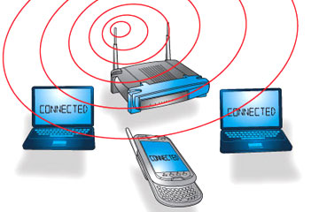
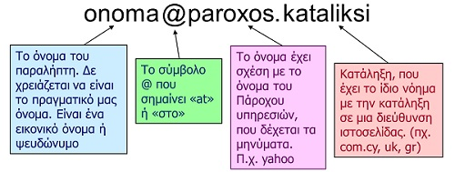
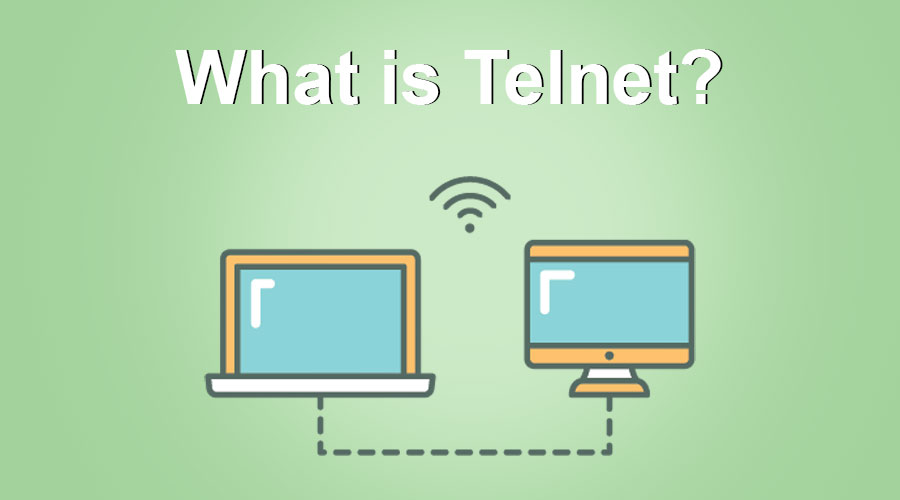
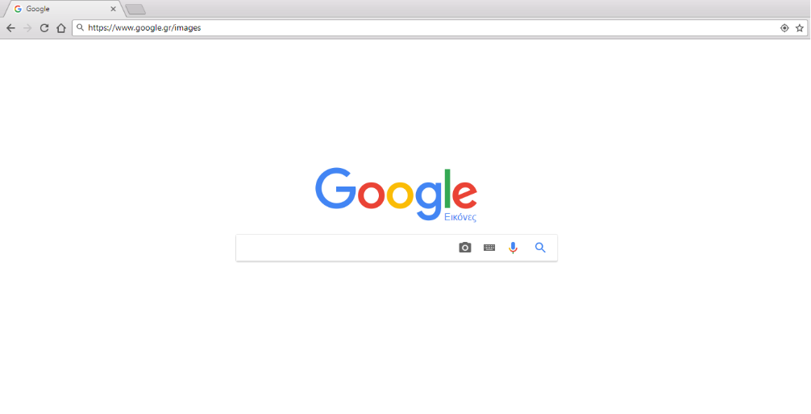

Κεφάλαιο 3
Διαδίκτυο
Σκοπός του κεφαλαίου: Η γνωριμία με το Διαδίκτυο
Διδακτική Ώρα: 1 (συμπεριλαμβανομένου του test αξιολόγησης)

Εισαγωγή
Έχοντας στο μυαλό μας ό,τι οι υπολογιστές είναι μηχανές με δυνατότητα να επεξεργάζονται δεδομένα, να μας παρέχουν πληροφορίες και να αποθηκεύουν μεγάλο όγκο δεδομένων-πληροφοριών,
φανταστείτε τον τεράστιο όγκο πληροφοριών που θα είχαμε εάν ενώναμε τους υπολογιστές που υπάρχουν σε όλο τον κόσμο και επιτρέπαμε στους χειριστές τους να επικοινωνούν μεταξύ τους.
Γι’ αυτό τον λόγο, αναπτύχθηκε η έννοια του Διαδικτύου.
Δίνοντας μια εισαγωγική έννοια, το Διαδίκτυο (αγγλικά: Internet) είναι ένα παγκόσμιο σύστημα διασυνδεδεμένων δικτύων υπολογιστών, οι οποίοι είναι τοποθετημένοι και
διασκορπισμένοι σε ολόκληρο τον πλανήτη. Οι διασυνδεδεμένοι ηλεκτρονικοί υπολογιστές ανά τον κόσμο, οι οποίοι βρίσκονται σε ένα κοινό δίκτυο επικοινωνίας, έχουν τη δυνατότητα να επικοινωνούν μεταξύ τους και να ανταλλάσσουν δεδομένα και πληροφορίες.
Ιστορική Αναδρομή
Κάνοντας μια μικρή ιστορική αναδρομή για το πως δημιουργήθηκε το Διαδίκτυο, ξεκινάμε από το 1969 που χρησιμοποιήθηκε ως ερευνητικό στρατιωτικό πρόγραμμα, με την ονομασία ARPANET, από το Υπουργείο Άμυνας των Ηνωμένων Πολιτειών της Αμερικής.
Όλα πρωτοξεκίνησαν με τη σύνδεση τεσσάρων υπολογιστών, που βρίσκονταν σε διαφορετικές πόλεις της Αμερικής.
Οι υπολογιστές συνδέονταν με τέτοιο τρόπο, ώστε, αν διακοπτόταν μια σύνδεση, οι υπόλοιποι να συνέχιζαν απρόσκοπτα την επικοινωνία τους. Αυτή η βασική αρχή σύνδεσης ισχύει ακόμη και σήμερα. Το ARPANET συνέχισε να μεγαλώνει με την προσθήκη και άλλων υπολογιστών.
Το 1974 σταμάτησε να είναι ερευνητικό πρόγραμμα του Υπουργείου Άμυνας και χρησιμοποιήθηκε από τα πανεπιστήμια για επιστημονικές έρευνες.
Το 1990 μετονομάστηκε σε Internet, το οποίο αποδόθηκε στα ελληνικά ως Διαδίκτυο.
Δυνατότητες και Υπηρεσίες του Διαδικτύου
Για να κατανοήσουμε σε βάθος τις δυνατότητες του Διαδικτύου, θα δούμε για αρχή από που παράγεται η λέξη «Διαδίκτυο» και στην ελληνική γλώσσα αλλά και την αγγλική.
ΔΤο όνομα, λοιπόν, αυτής της λέξης που είναι σύνθετη, παράγεται από τις λέξεις ‘Διασύνδεση Δικτύων’, ενώ αντίστοιχα στα αγγλικά ο όρος «Internet» προέρχεται από τη συνένωση των λέξεων ‘International Network’, δηλαδή Διεθνές Δίκτυο Υπολογιστών.
ΔΤο δίκτυο λοιπόν είναι ένα πλέγμα, ένα σύμπλεγμα με πολλαπλές διασταυρώσεις. Είναι σαν ένα σύνολο αντικειμένων που συνδέονται μεταξύ τους με κάποιο τρόπο για να εξυπηρετήσουν κάποιο σκοπό και να διευκολύνουν σε αρκετές περιπτώσεις τη ζωή του ανθρώπου, όπως για παράδειγμα το οδικό δίκτυο.
Επομένως το Διαδίκτυο είναι ένα διεθνές δίκτυο που ενώνει υπολογιστές σε όλο τον κόσμο, με τη βοήθεια των τηλεπικοινωνιακών γραμμών. Δηλαδή χρησιμοποιώντας τις γραμμές του τηλεφώνου, μπορούμε να ανταλλάσσουμε δεδομένα με υπολογιστές που είναι πολλά χιλιόμετρα μακριά, σαν να είναι αόρατα συνδεδεμένοι μεταξύ τους.
Με την εξέλιξη της τεχνολογίας, η σύνδεση στο Διαδίκτυο πλέον γίνεται και ασύρματα (wireless), δηλαδή χωρίς κάποια ενσύρματη σύνδεση, πολύ απλά χωρίς κάποιο είδους καλωδίου, όπως για παράδειγμα γίνεται στο κινητό μας τηλέφωνο ή το laptop. Σε αυτή τη περίπτωση τα δεδομένα μεταφέρονται μέσω δορυφορικής κεραίας ή γραμμών κινητής τηλεφωνίας.
Ποιες Υπηρεσίες μας προσφέρει το Διαδίκτυο;
Επιγραμματικά αναφέρουμε κάποιες βασικές..
- Παγκόσμιος ιστός – περιήγηση (surfing) σε πολυμορφικές πληροφορίες
- Ηλεκτρονικό ταχυδρομείο – (e-mail)
- Μεταφορά αρχείων – (ftp πρωτόκολλο)
- Εκτέλεση προγραμμάτων σε άλλους υπολογιστές – (σύνδεση σε απομακρυσμένους υπολογιστές)
- Ομάδες συζητήσεων – (forum, chat lines)
- Συνομιλία με άλλους χρήστες μέσω Τηλεδιάσκεψης – (τηλεφωνία και βιντεοκλήσεις)
- Αναζήτηση πληροφοριών – (μέσω μηχανών αναζήτησης)
- Ηλεκτρονικό Εμπόριο – (αγορές μέσω διαδικτύου)
Αναλυτικότερα..
1. Ο Παγκόσμιος Ιστός
Ο Παγκόσμιος Ιστός αποτελεί μια τεράστια συλλογή πληροφοριών, αποθηκευμένων σε διάφορες μορφές (κείμενο, εικόνα, ήχος, κινούμενη εικόνα και γραφικά κ.ά.). Αυτή η συλλογή είναι κατανεμημένη και διατίθεται στο Διαδίκτυο μέσω ειδικών εφαρμογών, που ονομάζονται εξυπηρετητές Παγκοσμίου Ιστού (WWW servers).
Αυτή η τεράστια συλλογή πληροφοριών που ουσιαστικά είναι ψηφιακά έγγραφα, δηλαδή κατανοητά από τα υπολογιστικά συστήματα, ονομάζονται ιστοσελίδες και βρίσκονται αποθηκευμένα σε διάφορους υπολογιστές ανά τον κόσμο. Όλες οι ιστοσελίδες, όλοι οι εξυπηρετητές μαζί συγκροτούν μία από τις πιο σημαντικές υπηρεσίες του Διαδικτύου που είναι ο Παγκόσμιος Ιστός (World Wide Web – WWW).
Κάθε χρήστης του Διαδικτύου μπορεί να περιηγηθεί στον Παγκόσμιο Ιστό και να προσπελάσει τις διαθέσιμες πληροφορίες χρησιμοποιώντας μια ειδική εφαρμογή-πελάτη, που ονομάζεται πρόγραμμα περιήγησης Π.I. (WWW browser), όπως το Google Chrome, το Mozilla κτλ. Που χρησιμοποιούμε στην καθημερινότητά μας.
2. Ηλεκτρονικό Ταχυδρομείο (e-mail)
Μέσω της υπηρεσίας του Ηλεκτρονικού Ταχυδρομείου μπορούμε σε λίγα λεπτά της ώρας να στείλουμε από τον υπολογιστή μας ένα ηλεκτρονικό γράμμα, για να φτάσει στην άλλη άκρη της γης. Αρκεί μόνο οι δυο υπολογιστές που ανταλλάσσουν μηνύματα να μπορούν να συνδεθούν στο Διαδίκτυο και να γνωρίζουμε την ηλεκτρονική διεύθυνση του παραλήπτη. Το Ηλεκτρονικό Ταχυδρομείο έχει σε πολλές χώρες ξεπεράσει σε αριθμό επιστολών το παραδοσιακό ταχυδρομείο, καθώς με μηδαμινό κόστος και από το σπίτι μας μπορούμε να ανταλλάσσουμε ηλεκτρονικά γράμματα εμπλουτισμένα με εικόνες που έχουμε φωτογραφήσει, τραγούδια ή βίντεο που έχουμε δημιουργήσει.
3. Μεταφορά αρχείων
Μια εξίσου σημαντική υπηρεσία που μας παρέχει το Διαδίκτυο είναι η μεταφορά αρχείων, η ανταλλαγή προγραμμάτων και δεδομένων μεταξύ των υπολογιστών. Για να πραγματοποιηθεί αυτή η διαδικασία αυτή το πρωτόκολλο FTP (File Transfer Protocol) είναι απαραίτητο. Στο Διαδίκτυο υπάρχει πλήθος από τοποθεσίες FTP (FTP sites) από τα οποία μπορείτε να «κατεβάσετε» (Download) αρχεία, δηλαδή, να τα μεταφέρετε από τον απομακρυσμένο υπολογιστή στον υπολογιστή σας ή να «ανεβάσετε» αρχεία, δηλαδή να τα στείλετε στον απομακρυσμένο υπολογιστή. Δηλαδή το πρωτόκολλο FTP κρύβεται πίσω από τη διαδικασία του να μπορούμε να πάρουμε αρχεία από κάποιο άλλο υπολογιστή (απομακρυσμένο) και να τα έχουμε τοπικά στον δικό μας υπολογιστή.
Η διαδικασία αυτή είναι αρκετά απλή και ακολουθείται για παράδειγμα όταν κάνουμε download ένα παιχνίδι ή μια εφαρμογή στον υπολογιστή μας.
Γενικά, οτιδήποτε μπορεί να αποθηκευτεί σε έναν υπολογιστή (πχ. εικόνες, ήχοι, κείμενα, προγράμματα κτλ.)– μπορεί να μεταφερθεί με την υπηρεσία FTP.
4. Εκτέλεση προγραμμάτων σε άλλους υπολογιστές
Στην συγκεκριμένη υπηρεσία, το Telnet είναι το πρωτόκολλο που μας επιτρέπει να συνδεόμαστε σε έναν απομακρυσμένο υπολογιστή. Μας επιτρέπει δηλαδή να δουλεύουμε αλληλεπιδραστικά στον υπολογιστή κάποιου άλλου χρήστη χρησιμοποιώντας τα προγράμματά του, σαν να είμαστε άμεσα συνδεδεμένοι μαζί του, σαν να έχουμε μπροστά μας τη δική του οθόνη και να πραγματοποιούμε διαδικασίες, να επεξεργαζόμαστε δεδομένα και ότι άλλο θα πραγματοποιούσαμε στο δικό μας υπολογιστή. Η ενεργοποίηση γίνεται μέσω του λειτουργικού μας συστήματος.
Εκτός από το υπάρχον εργαλείο του ίδιου του λειτουργικού συστήματος, υπάρχουν προγράμματα τρίτων που επιτρέπουν την πρόσβαση αυτή μέσω του πρωτοκόλλου Telnet. Είναι διαθέσιμα για download στο internet και ενδεικτικά αναφέρονται το περιβάλλον του TeamViewer, ΑnyDesk κ.α.
5. Ομάδες συζητήσεων
Η υπηρεσία συζητήσεων (Usenet news,Newsgroups, forums) δίνει τη δυνατότητα σε ανθρώπους από όλο τον κόσμο, να συμμετέχουν σε ανοιχτές συζητήσεις πάνω σε θέματα που τους ενδιαφέρουν. Οι συζητήσεις αυτές πραγματοποιούνται σε χώρους, που λειτουργούν σαν πίνακες ανακοινώσεων. Κάθε χρήστης μπορεί να στείλει το μήνυμά του (άρθρο, θέμα προς ανάλυση, απορίες) και οι άλλοι χρήστες μπορούν να διαβάσουν το μήνυμά του και, αν επιθυμούν, να απαντήσουν σε αυτό και είτε και να λύσουν μια δική τους απορία, διότι οι απαντήσεις στέλνονται και αυτές στον ίδιο χώρο, ώστε να μπορούν και αυτές με τη σειρά τους να διαβαστούν από όλους τους υπόλοιπους χρήστες. Έτσι, δεχόμαστε και μεταφέρουμε γνώση σε ανθρώπους από όλο τον κόσμο.
Συνειδητοποιούμε ότι μπορούμε να επικοινωνήσουμε άμεσα όχι μόνο με φίλους μας, αλλά και να γνωρίσουμε νέους ανθρώπους και να ανταλλάξουμε ιδέες και απόψεις.
6. Συνομιλία με άλλους χρήστες μέσω Τηλεδιάσκεψης
Η κάθε συνομιλία και συζήτηση που πραγματοποιούμε, μπορεί να γίνει ακόμη πιο ζωντανή, αν χρησιμοποιήσουμε την υπηρεσία της Τηλεδιάσκεψης. Χρησιμοποιώντας τον υπολογιστή μας μπορούμε να μιλάμε σε κάποιο φίλο μας και ταυτόχρονα να βλέπουμε την εικόνα του. Η τηλεδιάσκεψη μοιάζει με μια τηλεφωνική συνομιλία με ταυτόχρονη μετάδοση της εικόνας μας. Για να πραγματοποιηθεί μία τηλεδιάσκεψη, απαραίτητο είναι να έχουμε συνδεθεί στο Διαδίκτυο και να έχουμε στον υπολογιστή μας Web κάμερα, μικρόφωνο, ηχεία και το κατάλληλο λογισμικό.
7. Αναζήτηση πληροφοριών
Η αναζήτηση πληροφοριών γίνεται μέσω μηχανών αναζήτησης, δηλαδή μια υπηρεσία που διαθέτει μια βάση δεδομένων με στοιχεία για τις πληροφορίες, προγράμματα, αρχεία κ.α. που υπάρχουν στο Internet.
Ο χρήστης αναζητεί αυτό που θέλει με βάση κάποια συγκεκριμένα κριτήρια - λέξεις κλειδιά (keywords) και η μηχανή αναζήτησης του παρουσιάζει τις διευθύνσεις εκείνες στις οποίες έχουν βρεθεί οι λέξεις κλειδιά.

Μία από τις μεγαλύτερες μηχανές αναζήτησης αυτή τη στιγμή στον κόσμο είναι η Google αναζήτηση.
8. Ηλεκτρονικό Εμπόριο
Οι λεγόμενες αγορές μέσω διαδικτύου, ευρέως διαδεδομένο ως e-commerce. Είναι το εμπόριο παροχής αγαθών και υπηρεσιών που πραγματοποιείται εξ αποστάσεως με ηλεκτρονικά μέσα, βασιζόμενο δηλαδή στην ηλεκτρονική μετάδοση δεδομένων, χωρίς να καθίσταται αναγκαία η φυσική παρουσία των συμβαλλομένων μερών, πωλητή-αγοραστή.
Το Ηλεκτρονικό Εμπόριο δεν είναι απλώς να διαθέτει μια επιχείρηση ένα δικτυακό τόπο, είναι κάτι πολύ παραπάνω από αυτό. Υπάρχουν πολλές εφαρμογές του Ηλεκτρονικού Εμπορίου, όπως η ηλεκτρονική τραπεζική, η αγορά προϊόντων και υπηρεσιών από ηλεκτρονικά καταστήματα και εμπορικά κέντρα, η αγορά μετοχών, η εύρεση επαγγέλματος.
Στις μέρες μας, το ηλεκτρονικό εμπόριο έχει δει μεγάλη ανάπτυξη και όλο και περισσότερες επιχειρήσεις στρέφονται προς αυτή τη κατεύθυνση, πολλές φορές χωρίς να διαθέτουν καν φυσικό κατάστημα, διότι οι αγορές μέσω e-shop και τα κέρδη είναι πολύ περισσότερα και σε κάποιες περιπτώσεις οι δαπάνες διαθέτοντας μόνο ηλεκτρονικό κατάστημα είναι πολύ λιγότερες. Οπότε αρκετά συμφέρουσα εξέλιξη της αγοράς για ορισμένες κατηγορίες επιχειρήσεων.
Οι σημαντικότεροι κίνδυνοι χρήσης του Διαδικτύου
Εκτός όμως από τα πολλά πλεονεκτήματα του Διαδικτύου, είναι σημαντικό να αναφερθεί πως οι κίνδυνοι ελλοχεύουν κατά τη χρήση αυτού και δεν πρέπει να χρησιμοποιούμε, να εκμεταλλευόμαστε την αδιάκοπη πληροφορία που μας παρέχει και να κάνουμε άσκοπη χρήση αυτού.
Αναφέροντας μερικούς από αυτούς, έχουμε τα παρακάτω:
Μεταφορά ιών ή κακόβουλων προγραμμάτων. Ο κύριος τρόπος διάδοσης των ιών σήμερα είναι μέσω Ηλεκτρονικού Ταχυδρομείου. Είναι πιθανό στην προσωπική μας ηλεκτρονική διεύθυνση να έρχονται μηνύματα που περιέχουν ιούς ή άλλα κακόβουλα προγράμματα. Για το λόγο αυτό πριν ανοίξουμε ένα μήνυμα, πρέπει να έχουμε την επιφύλαξη μήπως αυτό περιέχει εντολές επιβλαβείς για τον υπολογιστή μας, ώστε να το σβήσουμε άμεσα. Μερικές από τις ενδείξεις που πρέπει να μας προβληματίζουν είναι: αν ο αποστολέας του μηνύματος είναι άγνωστος, αν
δεν υπάρχει το θέμα του μηνύματος ή ακόμα, αν περιλαμβάνει πληροφορίες για ανέλπιστα δώρα.
Ιστοσελίδες με ανακριβείς πληροφορίες. Μερικές φορές υπάρχει περίπτωση να επισκεφτούμε κάποια ιστοσελίδα με ανακριβείς ή ψευδείς πληροφορίες, που δημοσιεύονται εξαιτίας ημιμάθειας ή ακόμη και εξαιτίας δόλου. Για το λόγο αυτό πρέπει να είμαστε πολύ προσεκτικοί και επιφυλακτικοί για την αξιοπιστία μιας ιστοσελίδας, πριν δώσουμε βάρος σε όσα έχουν γραφτεί σε αυτήν.
Συζητήσεις με άγνωστα άτομα. Η επικοινωνία με την υπηρεσία Συνομιλίας (chat) μπορεί να μας φέρει σε επαφή με άτομα που δεν είναι ειλικρινή ως προς το σκοπό για τον οποίο θέλουν να επικοινωνήσουν μαζί μας και προσποιούνται ως προς τις πραγματικές τους διαθέσεις.
Ανακεφαλαίωση
Κάνοντας μια ανακεφαλαίωση της όλης πληροφορίας που αναφέρθηκε παραπάνω το Διαδίκτυο, που είναι πλέον κομμάτι της καθημερινότητας μας, θα πρέπει αρχικά να γνωρίζουμε γιατί το χρησιμοποιούμε και πως όλη αυτή η πληροφορία μπορεί να μας παρέχεται τόσο άμεσα και εύκολα, τις βασικές δυνατότητες που μας παρέχει η χρήση του, αλλά και να μπορούμε να αναγνωρίζουμε μερικούς από τους κινδύνους που κρύβει.